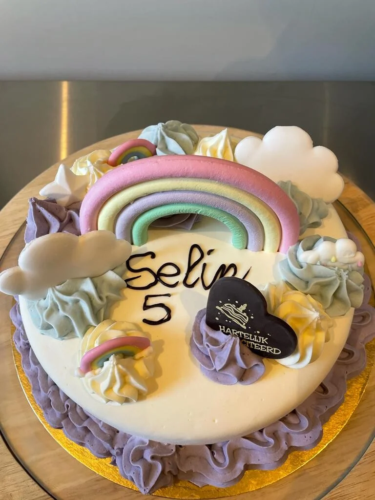

Meer dan 15 smaken
Van vanille en chocolade tot pistache, Dubai chocolate, passievrucht en Franui.
Ijsalon in Zonhoven
Heerlijk vers gedraaid ijs, ijstaarten met karakter en een foodtruck die elk feest meteen zomers maakt.

Ambachtelijk en vers
Bij De Smaakbom werken we met kwalitatieve producten en vers gedraaid ijs. Klassiekers, verrassende smaken en speciale wensen zoals lactosevrij, suikerarm, vegan of zo goed als glutenvrij: vraag er gerust naar, dan maken we samen jouw lekkerste smaakbommetje.
Van vanille en chocolade tot pistache, Dubai chocolate, passievrucht en Franui.
Kies je favoriete ijssmaak en stel je eigen milkshake samen zoals jij hem wil.
Voor verjaardagen, communies, feestdagen en elk moment dat een dessert mag knallen.

Voor elk wat wils
Bestel tijdig 1 liter vers ijs en kies uit het assortiment. Ideaal om thuis te genieten of om een etentje fris af te sluiten.
Neem contact op
Huisbereid, feestelijk en volledig bespreekbaar op maat van jouw gelegenheid.
Ontdek ijstaarten
Een blikvanger op jouw feest, opendeurdag, schoolmoment of lokaal evenement.
Bekijk foodtruck